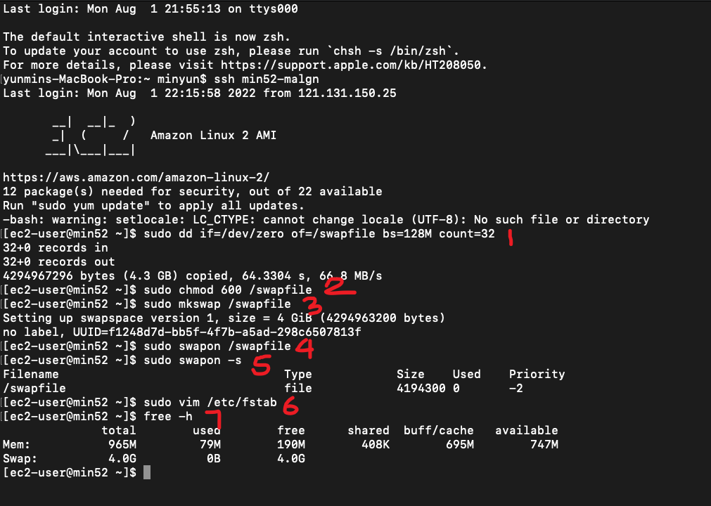
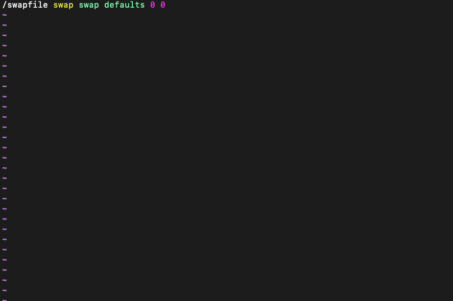

swap 설치를 통해 ec2 메모리 할당하기
Date: August 3, 2022 Tags: In progress
현재 생성한 ec2 인스턴스의 메모리 용량은 1gb이다.
4gb의 메모리 정보가 담긴 스왑 파일을 만들어서 서버의 메모리를 총 5gb로 할당해보겠다.
먼저 ec2 인스턴스에 접속했다.

- 우선 dd 명령을 사용해서 루트 파일 시스템에 스왑 파일을 만든다.
sudo dd if=/dev/zero of=/swapfile bs=128M count=32
- bs는 블록 크기이오 count는 블록 수이다.(128MB x 32)
조금 기다리면 4.3 GB copied 라는 문구가 나오면 스왑 파일이 생성된다
스왑 파일의 읽기 및 쓰기 권한을 변경해준다.
sudo chmod 600 /swapfile
- Linux 스왑 영역을 설정한다.
sudo mkswap /swapfile
- Setting up swapspace version 1 size = 4 Gib
4기가의 스왑 영역이 세팅된다는 문구가 나온다.
스왑 공간에 파일을 추가하여 스왑 파일을 즉시 사용할 수 있도록 설정한다.
sudo swapon /swapfile
- 프로시저가 성공했는지 확인한다.
sudo swapon -s
설정된 스왑파일의 정보가 나온다. 설정한 정보랑 맞는지 확인한다.
ec2 인스턴스가 부팅될때 스왑 파일을 시작하도록 /etc/fstab 파일을 수정한다.
sudo vim /etc/fstab
- fstab파일을 vim으로 연다.
- 기존 문구 다음 줄에 아래와 같이 입력하고 저장한다.
/swapfile swap swap defaults 0 0

- 메모리 할당 설정이 종료되었다. 설정된 메모리를 확인한다.
free -h